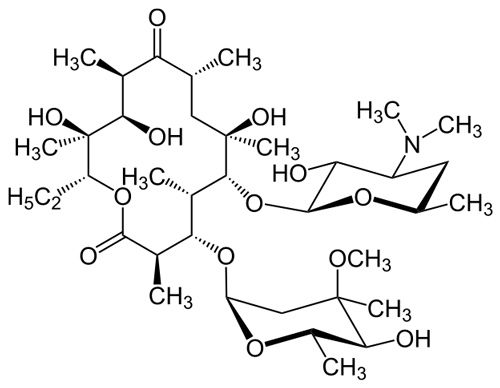

Азитромицин - показания к применению

Описание
Азитромицин Экомед ® – комбинация азитромицина и лактитола. Это полусинтетический противомикробный препарат из группы макролидов-азалидов. Активное вещество препарата прерывает синтез внутри белка микробной клетки, это замедляет рост и размножение бактерий. В высоких концентрациях оказывает бактерицидный эффект. Согласно инструкции, Азитромицин можно рассматривать как препарат выбора для пациентов с аллергией на β-лактамные антибиотики при респираторной патологии (особенно людям с повышенным риском развития дисбактериоза).
Форма выпуска и состав
- Таблетки 500мг;
- Порошок для приготовления суспензии 100мг;
- Порошок для приготовления суспензии 200мг;
Показания к применению
- Инфекции верхних дыхательных путей и ЛОР-органов: острый отит, бактериальный фарингит;
- Инфекции нижних дыхательных путей: обострение хронического бронхита, пневмония;
- Инфекции кожи и мягких тканей: угри обыкновенные средней степени тяжести, рожа, стафилококковые инфекции, эрозии;
- Инфекции мочеполовых путей: токсоплазмоз, бактериальный эндокардит, уретрит, цервицит и другие;
- Начальная стадия болезни Лайма;
Полная инструкция по применению